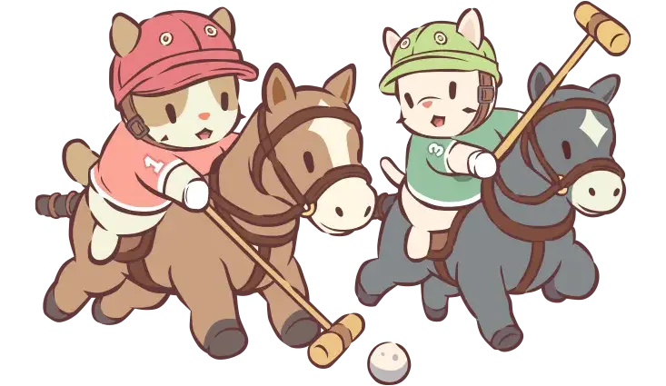
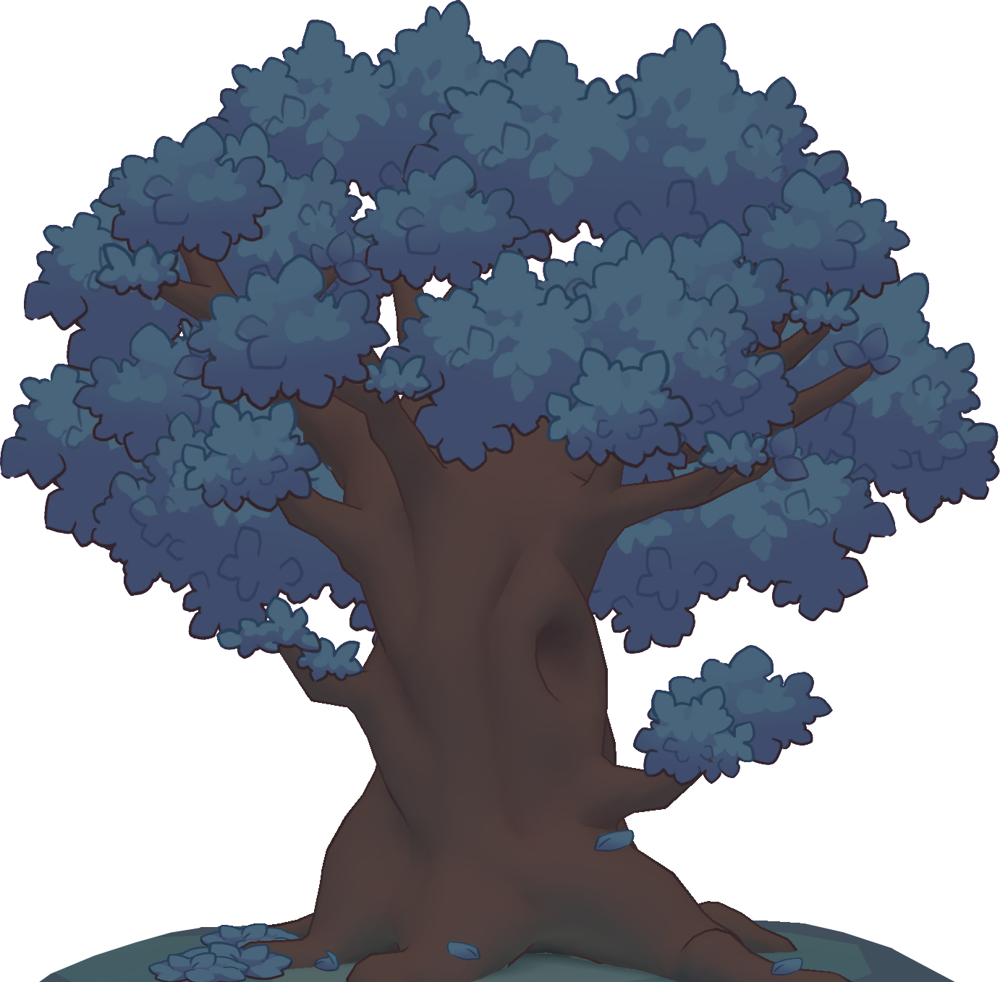

{{ t.storyEyebrow }}
{{ t.beat1 }}

{{ t.beat2 }}


{{ t.beat3 }}

{{ t.eventLine1 }}
{{ t.eventLine2 }}



{{ t.aboutP1 }}
{{ t.aboutP2 }}
{{ t.moreStory }}
{{ t.originQuote }}
{{ t.originNote }}

{{ t.s3Main }}


{{ t.inter1 }}


{{ t.s4Main }}


{{ t.inter2 }}

 z
z
z
z
z
z
{{ t.guitarMain }}
 ♪
♫
♪
♪
♫
♪
